Multiscale Finite Volume Pressure Solver
This example compares the multiscale finite volume method with a fine scale solution for a simple case of single phase incompressible flow with wells and boundary conditions on a Cartesian grid.
The Multiscale Finite Volume Method (MsFVM) is a multiscale method where instead of solving a full discretization for all fine cells, a series of smaller, local problems are solved with unit pressure to give a coarse pressure system. The resulting coarse pressure is then used to scale the local problems to find a fine scale pressure approximation.
The method is attractive because pressure updates are inexpensive once the pressure basis functions have been constructed and because it guarantees a conservative flow field if an additional set of basis functions are created.
Contents
- Load the modules required for the example
- We define a simple 2D Cartesian grid
- Generate dual grid from the coarse grid using a logical algorithm
- Set up permeability and fluid
- Add a simple Dirichlet boundary
- Add wells
- Solve the systems.
- Plot reference solution
- Plot the multiscale solution
- Plot error
- Decompose the solution
- Plot the basis solution
- Plot the correction functions
- Plot streamlines for the reference
- Plot streamlines for the multiscale solution
- Plot streamlines without the reconstructed flux
Load the modules required for the example
We will use streamlines and coarse grids.
mrstModule add coarsegrid streamlines msfvm
We define a simple 2D Cartesian grid
The fine scale grid will consist of 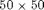 fine cells, with a coarse grid of 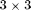 coarse blocks.
nx = 50; ny = 50; Nx = 3; Ny = 3; % Instansiate the fine grid G = cartGrid([nx, ny]); G = computeGeometry(G); % Generate coarse grid p = partitionUI(G, [Nx, Ny]); CG = generateCoarseGrid(G, p); CG = coarsenGeometry(CG);
Generate dual grid from the coarse grid using a logical algorithm
The dual grid is based on the coarse grid and has corners defined by the coarse centroids of the coarse grid. Here our grid is Cartesian which makes it easy to define a dual grid based on the logical indices.
We also visualize the dual grid. Cells corresponding to primal coarse centers are drawn in green, edge cells are drawn in orange and the primal coarse grid is drawn in red. Note that while the coarse grid is face centered, the dual coarse grid is cell centered, giving overlap between edges.
DG = partitionUIdual(CG, [Nx, Ny]); clf; plotDual(G, DG) outlineCoarseGrid(G,p, 'red') view(0,90), axis tight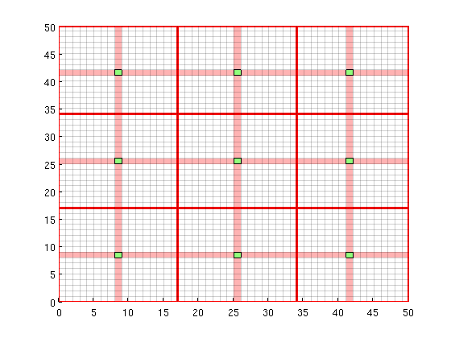
Set up permeability and fluid
We create a fluid object for one phase flow. The permeability is generated via a porosity distribution, which is then visualized.
fluid = initSingleFluid('mu' , 1*centi*poise , ... 'rho', 1014*kilogram/meter^3); % Permeability poro = gaussianField(G.cartDims, [.4 .8], [11 3 3], 2.5); K = poro.^3.*(1e-5)^2./(0.81*72*(1-poro).^2); rock.perm = K(:); % Plot log10 of permeability clf; plotCellData(G, log10(rock.perm)); axis tight off;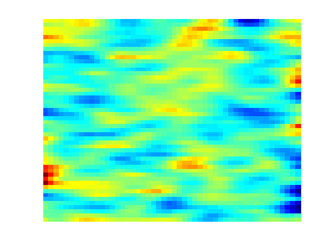
Add a simple Dirichlet boundary
Add a simple flow boundary condition based on pressure. This gives flow everywhere.
bc = []; bc = pside (bc, G, 'LEFT' , 1*barsa()); bc = pside (bc, G, 'RIGHT', 0);
Add wells
We are adding a producer / injector pair of wells to demonstrate their effect on the solver.
W = []; cell1 = 13 + ny*13; cell2 = 37 + ny*37; W = addWell(W, G, rock, cell1, ... 'Type', 'bhp' , 'Val', .0*barsa(), ... 'Radius', 0.1, 'InnerProduct', 'ip_tpf', ... 'Comp_i', [0, 1]); W = addWell(W, G, rock, cell2, ... 'Type', 'bhp' , 'Val', 1*barsa(), ... 'Radius', 0.1, 'InnerProduct', 'ip_tpf', ... 'Comp_i', [0, 1]);
Solve the systems.
First we initiate a pressure system. This structure is always required, but without transport only the grid is relevant.
We also compute transmissibilities. The MS solver is based on the TPFA solver, and as such has many of the same arguments. Multiscale methods in general can be seen as approximations to a specific discretization, and will inherit any strengths and weaknesses from the parent method, for instance grid orientation effects.
The system is then solved three times: Once with a full TPFA solver, once with the multiscale sovler with conservative flow and lastly using the multiscale solver without conservative flow.
sol = initState(G, [], 0, [1, 0]); T = computeTrans(G, rock); % Solve TPFA reference solution. solRef = incompTPFA(sol, G, T, fluid, 'wells', W, 'bc', bc); % Solve multiscale pressure. Reconstruct conservative flow using flow basis % functions. solMSFV = solveMSFV_TPFA_Incomp(sol, G, CG, T, fluid,... 'Wells', W,... 'bc', bc,... 'Dual', DG,... 'Reconstruct', true,... 'Verbose', false); solMSFV2 = solveMSFV_TPFA_Incomp(sol, G, CG, T, fluid,... 'Wells', W,... 'bc', bc,... 'Dual', DG,... 'Reconstruct', false,... 'Verbose', false);
Plot reference solution
clf; plotCellData(G, solRef.pressure); axis tight off; colorbar; set(gca, 'CLim', [0, max(solRef.pressure)]); title('TPFA')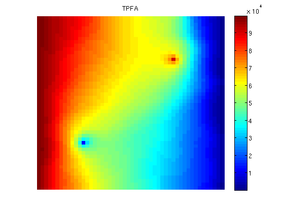
Plot the multiscale solution
clf; plotCellData(G, solMSFV.pressure); axis tight off; colorbar; title('MsFVM') % Use same axis scaling for the multiscale solution as the TPFA solution set(gca, 'CLim', [0, max(solRef.pressure)]);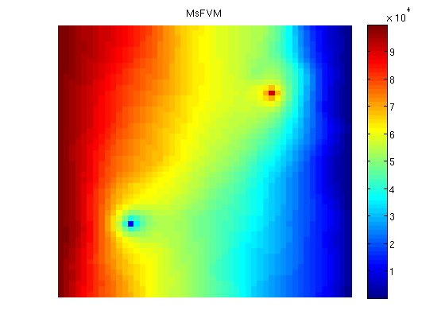
Plot error
Plot error scaled with local variation
reportError(solRef.pressure, solMSFV.pressure); clf; plotCellData(G, abs(solRef.pressure - solMSFV.pressure) ./ ... abs(max(solRef.pressure - min(solRef.pressure)))); axis tight off; colorbar;
ERROR: 2: 0.03167324 Sup: 0.08558124 Minimum 0.00036582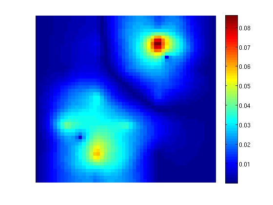
Decompose the solution
We observe that the error is large near the wells. This is not a coincidence: The MsFV solves bases its initial pressure solution of a coarse system, which does not actually include wells other than in a integral sense. We can decompose the solution to see this:
% Find the pressure basis p_basis = solMSFV.msfvm.B*solMSFV.pressurecoarse; p_corr = solMSFV.msfvm.Cr; P = solMSFV.P'; % We need to permute this back to the original grid ordering using the % permutation matrix... p_basis = P*p_basis; p_corr = P*p_corr;
Plot the basis solution
Note that the pressure has become low where the wells are! This happens because the system simultanously tries to create correct flux over the edges of the coarse grid as if the wells were there, but tries to find a pressure solution where the wells are not actually included. This leads to low pressure. However, a set of correction functions are constructed, which add inn fine scale behavior of the wells as well as boundary conditions:
clf; plotCellData(G, p_basis) title('Basis pressure'); outlineCoarseGrid(G,p, 'red') plotDual(G, DG)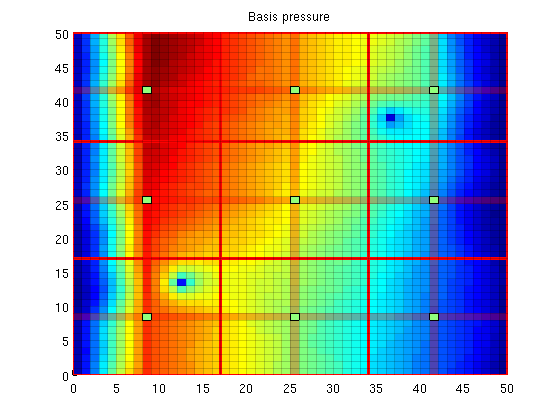
Plot the correction functions
The actual pressure is the sum of these two solutions. Note that when applied as an iterative method, the correction functions also contain non-local effects, i.e. source terms trying to minimze the residual.
clf; plotCellData(G, p_corr) title('Correction pressure') outlineCoarseGrid(G,p, 'red') plotDual(G, DG)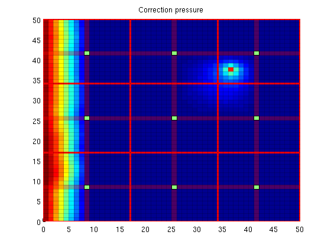
Plot streamlines for the reference
[i j] = ind2sub(G.cartDims, 1:G.cells.num); % Start a streamline at all the boundaries, as well as in each well. startpts = find(i == max(i) | i == min(i) | j == min(j) | j == max(j)); startpts = [startpts'; vertcat(W.cells)]; % Once a flux is plotted, reverse the flux to get more streamlines. clf; streamline(pollock(G, solRef, startpts)); tmp.flux = -solRef.flux; streamline(pollock(G, tmp, startpts)); title('TPFA') axis tight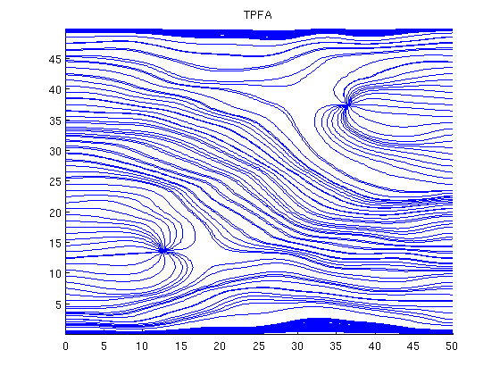
Plot streamlines for the multiscale solution
clf; streamline(pollock(G, solMSFV, startpts)); tmp.flux = -solMSFV.flux; streamline(pollock(G, tmp, startpts)); title('MsFVM') axis tight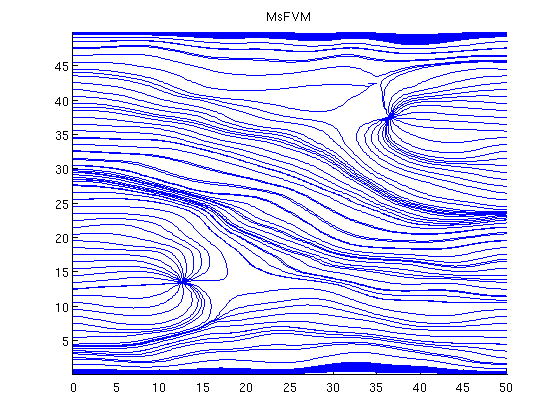
Plot streamlines without the reconstructed flux
Note that the reconstructed flux is much closer to the reference.
clf; streamline(pollock(G, solMSFV2, startpts)); tmp.flux = -solMSFV2.flux; streamline(pollock(G, tmp, startpts)); title('MsFVM (No flux reconstruction)') axis tight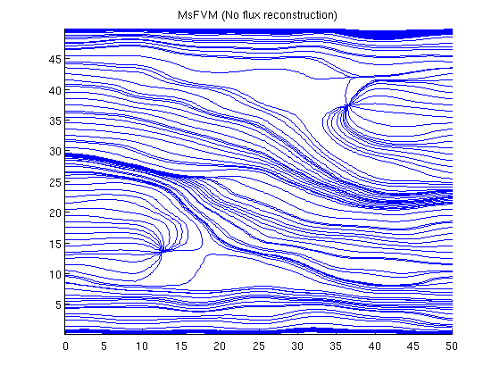